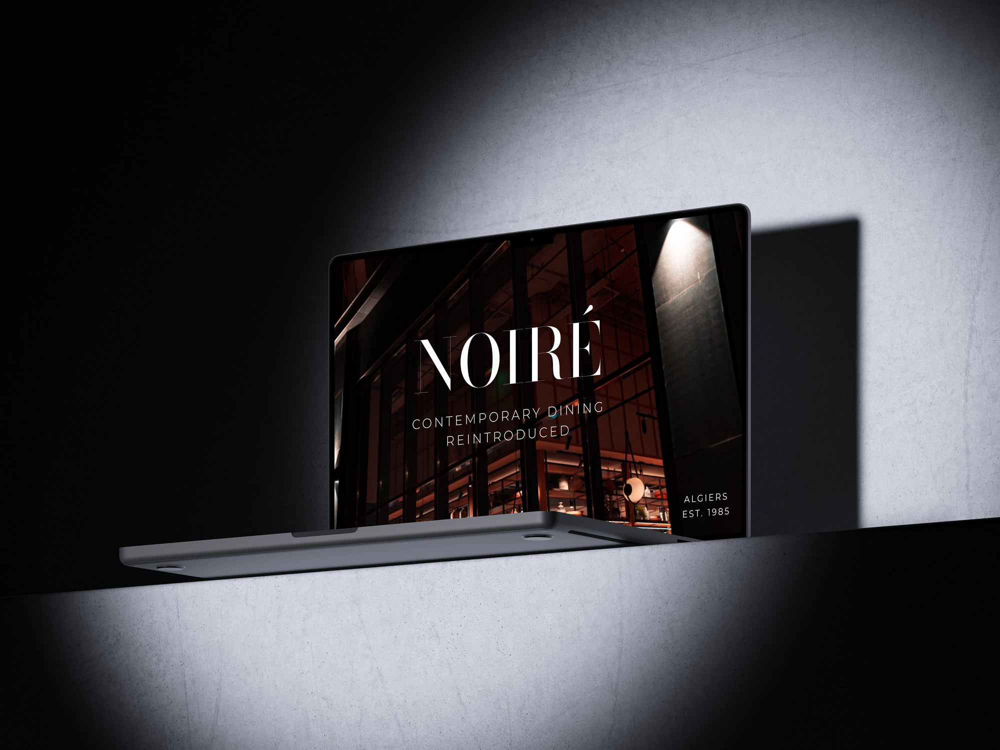
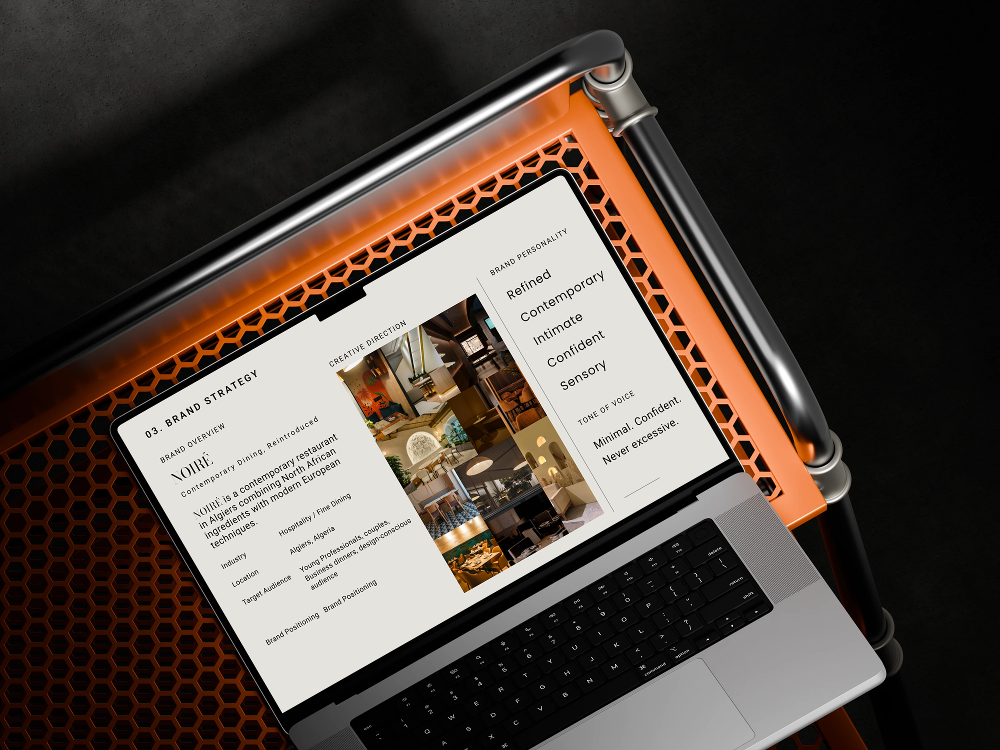
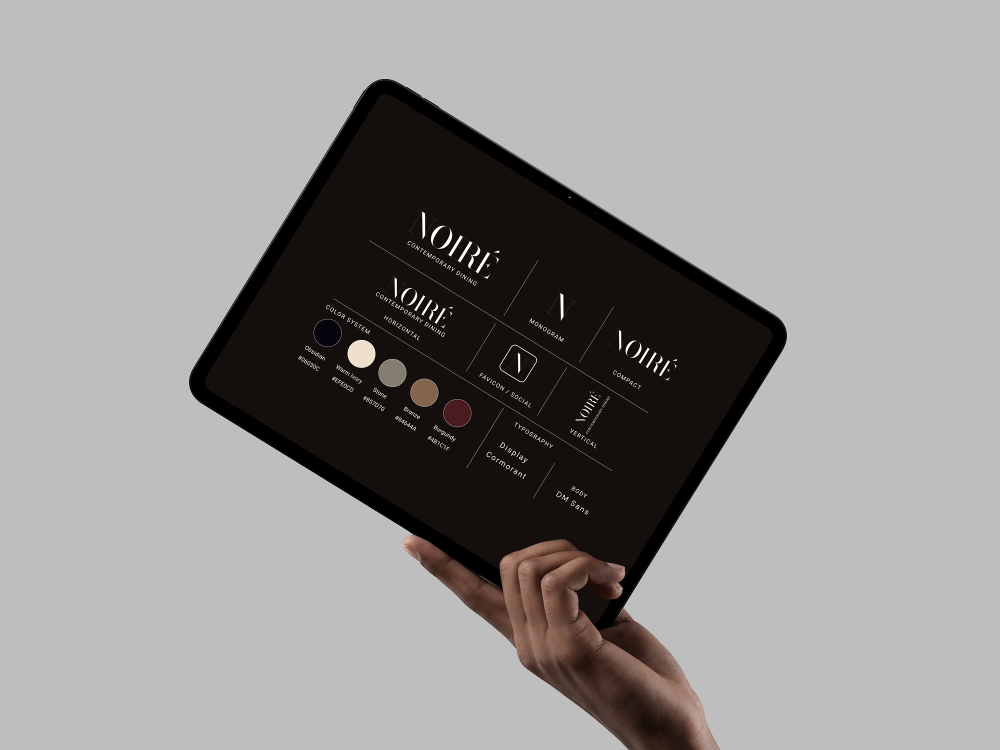
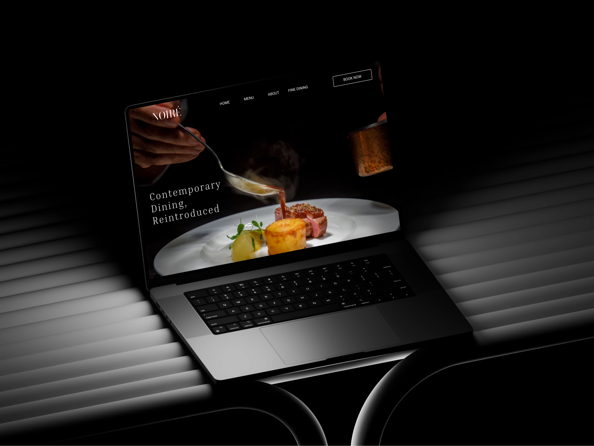
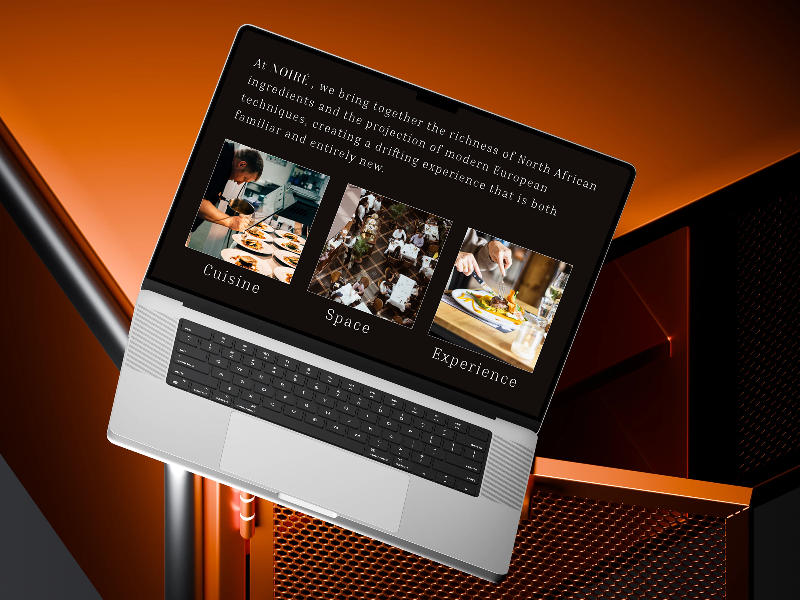
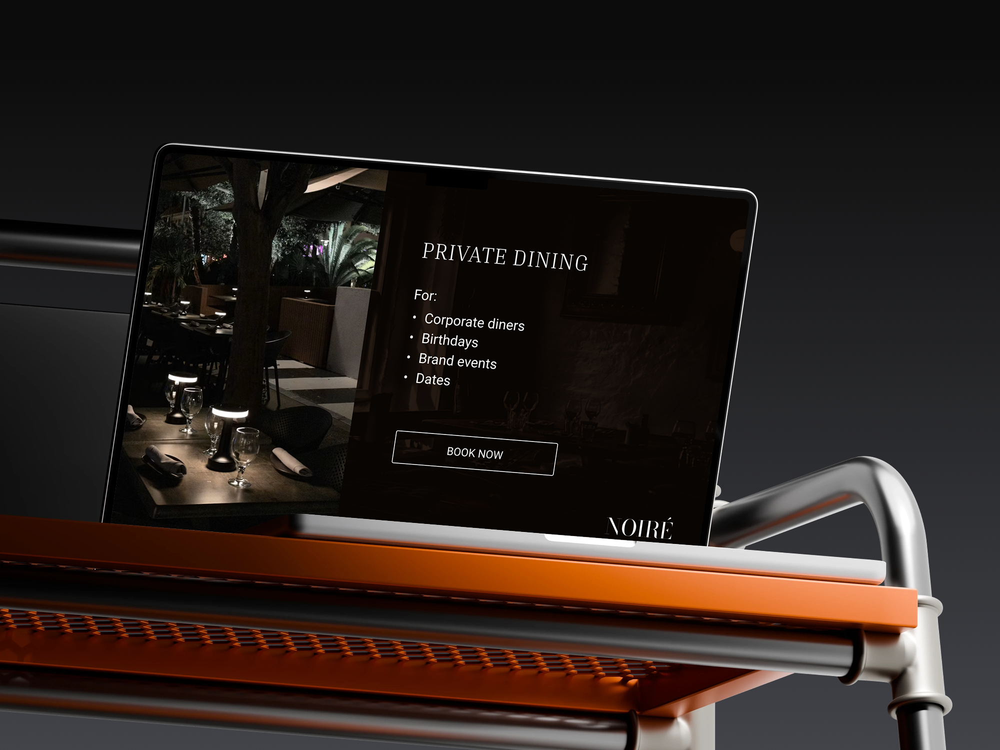

← Back to work
01 / BRAND IDENTITY · UI/UX · DIGITAL EXPERIENCE
NOIRÉ
Contemporary dining, reintroduced.
A contemporary restaurant in Algiers combining North African ingredients with modern European techniques.

ALGIERSEST. 1985
02 / OVERVIEW
THE BRIEF
Build a dining identity that feels refined, intimate and contemporary.
IndustryHospitality / Fine Dining
LocationAlgiers, Algeria
AudienceYoung professionals, couples, business dinners, design-conscious audience

04 / IDENTITY
LOGO · COLOR · TYPE
A restrained system with presence.
The identity uses a flexible NOIRÉ logo system, a compact monogram, a warm neutral palette and a serif/sans typographic pairing.

05 / DIGITAL EXPERIENCE
WEBSITE
From the identity to the digital table.
The website translates the restaurant's atmosphere into a clear experience built around discovery, menu exploration and booking.


07 / PRIVATE DINING

BOOK NOW
A digital experience that also sells the occasion.
Private dining is positioned for corporate dinners, birthdays, brand events and dates, with a direct booking call to action.
NOIRÉ